<!DOCTYPE html>
<html lang="en">
	<head>
		<meta charset="utf-8">
		<meta name="viewport" content="width=device-width, initial-scale=1" />
		
		<script async src="https://www.googletagmanager.com/gtag/js?id=UA-136339984-2"></script>
		<script>
		window.dataLayer = window.dataLayer || [];
		function gtag(){dataLayer.push(arguments);}
		gtag('js', new Date());

		gtag('config', 'UA-136339984-2');
		</script>
		<title>Xinshi Chen - Homepage</title>
		<link rel="alternate" type="application/rss+xml" title="RSS" href="index.xml">
		<link rel="canonical" href="./">
		
		<link rel="shortcut icon" type="image/png" href="apple-touch-icon-precomposed.png">
		
		
		<meta name="generator" content="Hugo 0.88.1" />

		
		

		
		<link rel="stylesheet" href="css/tachyons.min.css" />
		<link rel="stylesheet" href="css/story.css" />
		<link rel="stylesheet" href="css/descartes.css" />
		
		<link rel="stylesheet" href="https://use.fontawesome.com/releases/v5.3.1/css/all.css" integrity="sha384-mzrmE5qonljUremFsqc01SB46JvROS7bZs3IO2EmfFsd15uHvIt+Y8vEf7N7fWAU" crossorigin="anonymous">
		<link href="https://fonts.googleapis.com/css?family=Quattrocento+Sans:400,400i,700,700i|Quattrocento:400,700|Spectral:400,400i,700,700i&amp;subset=latin-ext" rel="stylesheet">
		

		<script src="https://cdnjs.cloudflare.com/ajax/libs/jquery/3.3.1/jquery.min.js"></script>
		
		<script src="js/story.js"></script>

	</head>
	<body class="ma0 bg-white  page-kind-home is-page-false ">
		
		<header class="cover bg-top" style="background-image: url('img/header_taiwan.jpg'); background-size: 100% 100%; background-position: center;">
			<div class="">

				<nav class="hide-print sans-serif  border-box pa3 ph5-l">
					<a href="" title="Home">
						
					</a>
					<div class="fr h2 pv2 tr">
						<a class="link f5 ml2 dim near-white" href="./#publication">Publications</a>
						<a class="link f5 ml2 dim near-white" href="./#education">Education</a>
						<a class="link f5 ml2 dim near-white" href="./#experience">Experience</a>
						<a class="link f5 ml2 dim near-white" href="./#teaching">Teaching</a>
						<a class="link f5 ml2 dim near-white" href="./#award">Award</a>
						<a class="link f5 ml2 dim near-white fas fa-rss-square" href="index.xml" title="RSS Feed"></a>
					</div>
				</nav>

				<div id="hdr" class="tc-l pv4-ns pv5-l pv2 ph3 ph4-ns">
					<h1 class="near-white mt1-ns f2 fw3 mb0 mt0 lh-title">&nbsp; &nbsp;</h1>
					<h2 class="near-white mt3-l mb4-l fw1 f6 f3-l measure-wide-l center lh-copy mt2 mb3">&nbsp;
						
						
							
						
					</h2>
				</div>

				
				
				
				

			</div>
		</header>
		
		<main role="main">
		
<main aria-role="main">
  <div class="center bg-white br-3 pv1 ph5 lh-copy f5 nested-links mw8">
     
     
      <article>
        <h2 id="about-me">About Me</h2>
<p><strong>Xinshi Chen (陈心诗)</strong></p>

<p> <br>
I am a Research Scientist at <a href="https://www.bytedance.com/">ByteDance</a> Seed, where I work on AI for Science with a focus on biomolecular structure prediction and protein design.</p>
<p>My recent work centers on the <a href="https://github.com/bytedance/Protenix">Protenix</a> family of open-source models and tools, spanning high-accuracy structure prediction, efficient inference, benchmarking, and de novo binder design. More broadly, I am interested in principled machine learning, learning-based algorithm design, and scientific applications at the interface of machine learning and biology.</p>
<p>Previously, I received my Ph.D. in Machine Learning from <a href="http://ml.gatech.edu/">Georgia Tech</a>, where I was advised by <a href="https://www.cc.gatech.edu/~lsong/">Prof. Le Song</a>. Before that, I received my B.S. and M.Phil. in Mathematics from the Chinese University of Hong Kong under the supervision of <a href="https://www.math.cuhk.edu.hk/~tschung/">Prof. Eric Chung</a>. I have also spent time at <a href="https://www.ornl.gov/">Oak Ridge National Laboratory</a>, <a href="https://www.antgroup.com/en">Ant Financial</a>, <a href="https://ai.facebook.com/">Facebook AI</a>, and <a href="https://mbzuai.ac.ae/">MBZUAI</a>.</p>
<p><strong>Email:</strong> xinshi [dot] chen [at] gatech [dot] edu <span style="color:red">(still accessible)</span><br>
<a href="https://scholar.google.com/citations?hl=en&amp;user=irg46EUAAAAJ">Google Scholar</a> | <a href="https://x.com/chen_xinshi">Twitter</a> | <a href="https://www.linkedin.com/in/xinshi-chen-26802576/">LinkedIn</a></p>
<h3 id="publication">Selected Recent Work</h3>
<p><strong>Protenix-v2: Broadening the Reach of Structure Prediction and Biomolecular Design</strong><br>
Yuxuan Zhang&dagger;, Chengyue Gong&dagger;, Jinyuan Sun&dagger;, Jiaqi Guan&dagger;, Milong Ren&dagger;, Song Xue&dagger;, Hanyu Zhang&dagger;, Wenzhi Ma&dagger;, Zhenyu Liu&dagger;, <u>Xinshi Chen</u>&#8902;, Wenzhi Xiao&#8902;<br>
<em>Technical report</em> 2026</p>
<p><strong>Protenix-v1: Toward High-Accuracy Open-Source Biomolecular Structure Prediction</strong><br>
Protenix Team, Yuxuan Zhang, Chengyue Gong, Hanyu Zhang, Wenzhi Ma, Zhenyu Liu, <u>Xinshi Chen</u>, Jiaqi Guan, Lan Wang, Yanping Yang, Yu Xia, and Wenzhi Xiao<br>
<em>bioRxiv</em> 2026<br>
<a href="https://github.com/bytedance/Protenix">project</a></p>
<p><strong>PXDesign: Fast, Modular, and Accurate De Novo Design of Protein Binders</strong><br>
Protenix Team, Milong Ren, Jinyuan Sun, Jiaqi Guan, Cong Liu, Chengyue Gong, Yuzhe Wang, Lan Wang, Qixu Cai, Wenzhi Ma, Yuxuan Zhang, Zhenyu Liu, Hanyu Zhang, <u>Xinshi Chen</u>, and Wenzhi Xiao<br>
<em>bioRxiv</em> 2025<br>
<a href="https://protenix.github.io/pxdesign/">project</a></p>
<p><strong>Protenix - Advancing Structure Prediction Through a Comprehensive AlphaFold3 Reproduction</strong><br>
Protenix Team, <u>Xinshi Chen</u>, Yuxuan Zhang, Chan Lu, Wenzhi Ma, Jiaqi Guan, Chengyue Gong, Jincai Yang, Hanyu Zhang, Ke Zhang, Shenghao Wu, Kuangqi Zhou, Yanping Yang, Zhenyu Liu, Lan Wang, Bo Shi, Shaochen Shi, and Wenzhi Xiao<br>
<em>bioRxiv</em> 2025<br>
<a href="https://github.com/bytedance/Protenix">project</a></p>
<h3 id="preprint--workshop">Earlier Preprint &amp; Workshop</h3>
<p><strong>A Deep Learning Approach to Recover Conditional Independence graphs</strong><br>
Harsh Shrivastava, Urszula Chajewska, Robin Abraham, <u>Xinshi Chen</u><br>
<em>NeurIPS 2022 Workshop: New Frontiers in Graph Learning</em><br>
<a href="https://arxiv.org/pdf/2211.06829v1.pdf">paper</a></p>
<p><strong>Graph Condensation via Receptive Field Distribution Matching</strong><br>
Mengyang Liu, Shanchuan Li, Le Song, <u>Xinshi Chen</u><br>
<em>Arxiv Preprint 2022</em><br>
<a href="https://arxiv.org/pdf/2206.13697.pdf">paper</a></p>
<!-- 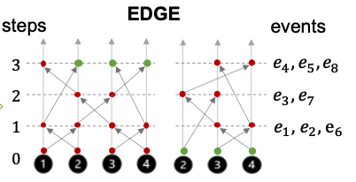 -->
<p><strong>Efficient Dynamic Graph Representation Learning at Scale</strong><br>
<u>Xinshi Chen</u>, Yan Zhu, Haowen Xu, Mengyang Liu, Liang Xiong, Muhan
Zhang, Le Song<br>
<em>Arxiv Preprint 2021</em><br>
<a href="./papers/paper/edge.pdf">paper</a></p>
<!-- 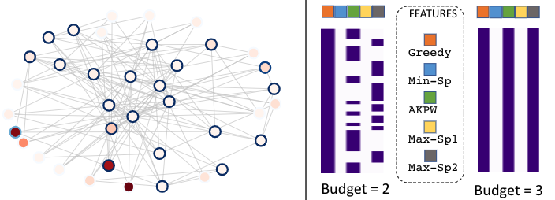 -->
<p><strong>A Framework For Differentiable Discovery Of Graph Algorithms</strong><br>
Hanjun Dai, <u>Xinshi Chen</u>, Yu Li, Xin Gao, Le Song<br>
<em>NeurIPS 2020 Workshop in Learning Meets Combinatorial Algorithms</em>, <span style="color:red"><strong>Oral</strong></span><br>
<a href="https://openreview.net/forum?id=5UvvKsBTDcR">paper</a> | <a href="https://youtu.be/YkKH1Rq9fKk">talk</a></p>
<!-- 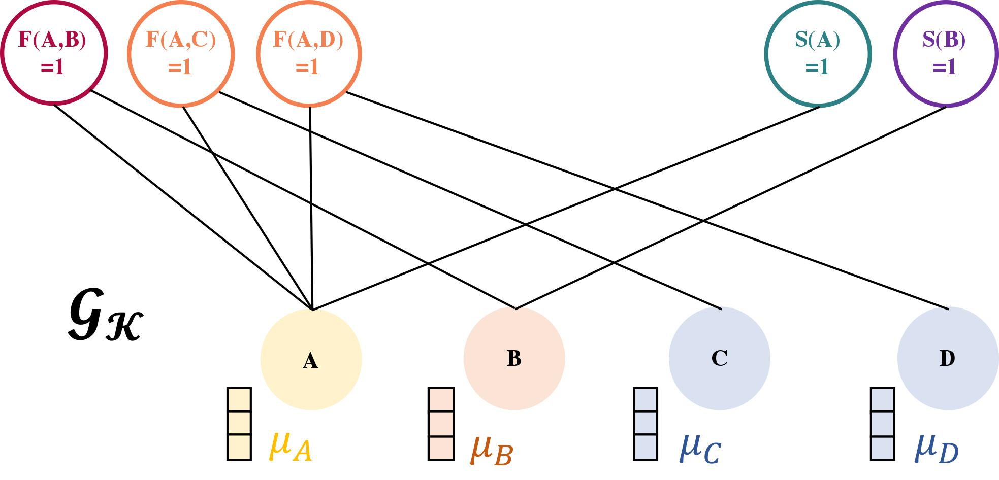 -->
<p><strong>Can Graph Neural Networks Help Logic Reasoning?</strong><br>
Yuyu Zhang*, <u>Xinshi Chen</u>*, Yuan Yang*, Arun Ramamurthy, Bo Li, Yuan Qi, Le Song<br>
<em>NeurIPS 2019 Workshop in Knowledge Representation &amp; Reasoning Meets Machine Learning</em><br>
<a href="https://arxiv.org/pdf/1906.02111.pdf">paper</a> | <a href="https://drive.google.com/file/d/18YadGde5_nSychxz-7nIgPDnfPgvdIqP/view">poster</a></p>
<!-- 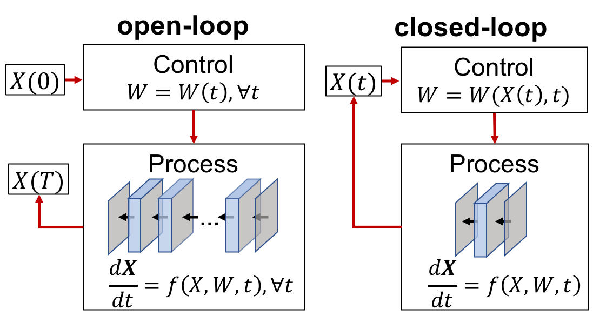 -->
<p><strong>Review: Ordinary Differential Equations For Deep Learning</strong><br>
<u>Xinshi Chen</u><br>
<em>Arxiv Preprent 2019</em><br>
<a href="https://arxiv.org/pdf/1911.00502.pdf">paper</a></p>
<p> </p>
<h3 id="conference--journal">Conference &amp; Journal</h3>
<!-- 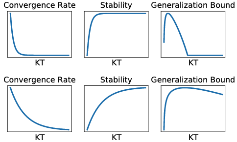 -->
<p><strong>Provable Learning-based Algorithm For Sparse Recovery</strong><br>
<u>Xinshi Chen</u>, Haoran Sun, Le Song<br>
<em>International Conference on Learning Representations</em> (<strong>ICLR</strong>) 2022<br>
<a href="https://openreview.net/pdf?id=BwPaPxwgyQb">paper</a></p>
<!-- 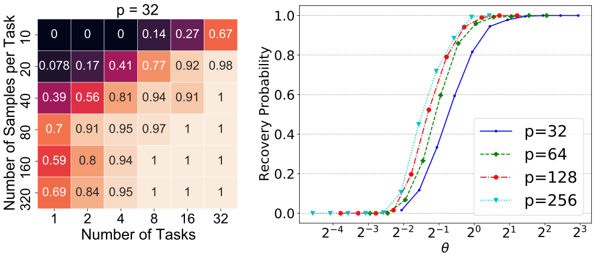 -->
<p><strong>Multi-task Learning of Order-Consistent Causal Graphs</strong><br>
<u>Xinshi Chen</u>, Haoran Sun, Caleb Ellington, Eric Xing, Le Song<br>
<em>Advances in Neural Information Processing Systems</em> (<strong>NeurIPS</strong>) 2021<br>
<a href="https://arxiv.org/pdf/2111.02545.pdf">paper</a> | <a href="https://github.com/xinshi-chen/MultiDAG">github</a> | <a href="https://neurips.cc/virtual/2021/poster/27045">talk</a> | <a href="./papers/slides/nips2021-multidag.pdf">slides</a></p>
<!-- 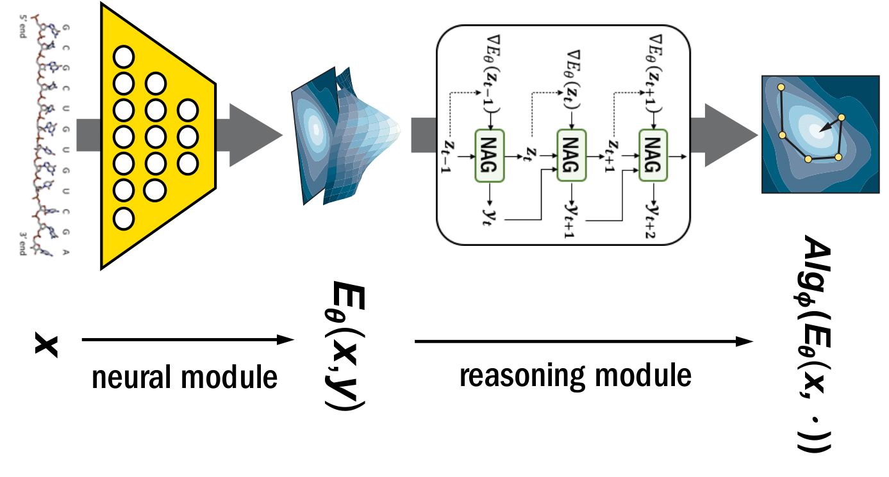 -->
<p><strong>Understanding Deep Architectures With Reasoning Layer</strong><br>
<u>Xinshi Chen</u>, Yufei Zhang, Christoph Reisinger, Le Song<br>
<em>Advances in Neural Information Processing Systems</em> (<strong>NeurIPS</strong>) 2020<br>
<a href="https://papers.nips.cc/paper/2020/file/0d82627e10660af39ea7eb69c3568955-Paper.pdf">paper</a> | <a href="https://github.com/xinshi-chen/Deep-Architecture-With-Reasoning-Layer">github</a> | <a href="https://nips.cc/virtual/2020/protected/poster_0d82627e10660af39ea7eb69c3568955.html">talk</a> | <a href="./papers/slides/nips2020-reasoning.pdf">slides</a></p>
<!-- 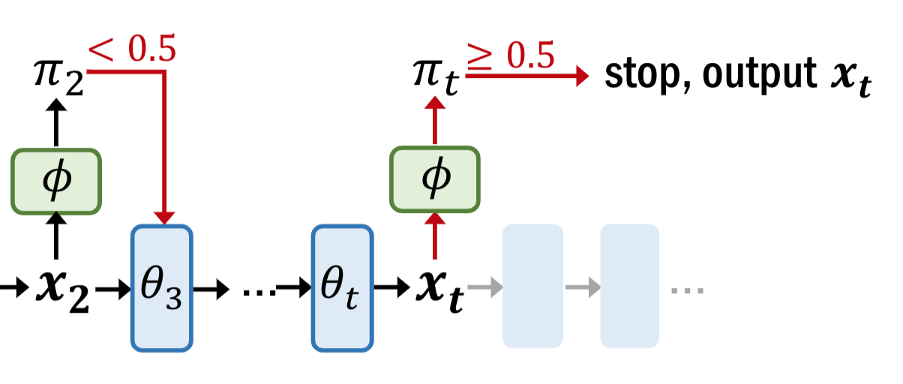 -->
<p><strong>Learning To Stop While Learning To Predict</strong><br>
<u>Xinshi Chen</u>, Hanjun Dai, Yu Li, Xin Gao, Le Song<br>
<em>International Conference on Machine Learning</em> (<strong>ICML</strong>) 2020<br>
<a href="./papers/paper/l2stop.pdf">paper</a> | <a href="https://github.com/xinshi-chen/l2stop">github</a> | <a href="https://icml.cc/virtual/2020/poster/6279">talk</a> | <a href="./papers/slides/icml2020_l2stop.pdf">slides</a></p>
<!-- 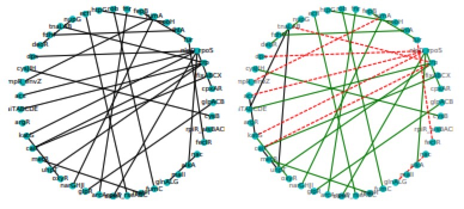 -->
<p><strong>GLAD: Learning Sparse Graph Recovery</strong><br>
Harsh Shrivastava, <u>Xinshi Chen</u>, Binghong Chen, Guanghui Lan, Srinivas Aluru, Han Liu, Le Song<br>
<em>International Conference on Learning Representations</em> (<strong>ICLR</strong>) 2020<br>
<a href="https://openreview.net/pdf?id=BkxpMTEtPB">paper</a> | <a href="https://github.com/Harshs27/GLAD">github</a> | <a href="https://iclr.cc/virtual_2020/poster_BkxpMTEtPB.html">talk</a></p>
<!-- 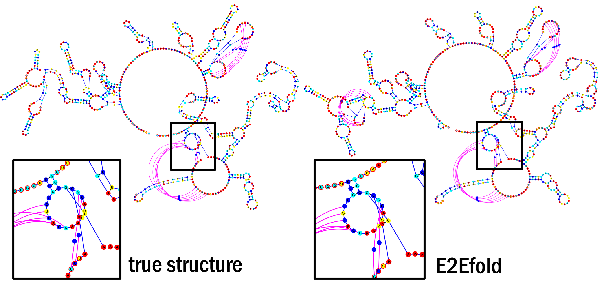 -->
<p><strong>RNA Secondary Structure Prediction By Learning Unrolled Algorithms</strong><br>
<u>Xinshi Chen</u>*, Yu Li*, Ramzan Umarov, Xin Gao, Le Song (*equal contribution)<br>
<em>International Conference on Learning Representations</em> (<strong>ICLR</strong>) 2020, <span style="color:red"><strong>Oral</strong></span>.<br>
<a href="https://openreview.net/pdf?id=S1eALyrYDH">paper</a> | <a href="https://github.com/ml4bio/e2efold">github</a> | <a href="https://iclr.cc/virtual_2020/poster_S1eALyrYDH.html">talk</a> | <a href="./papers/slides/iclr2020-e2efold.pdf">slides</a> | <a href="https://www.cc.gatech.edu/news/633633/machine-learning-tool-may-help-us-better-understand-rna-viruses">news</a></p>
<!-- 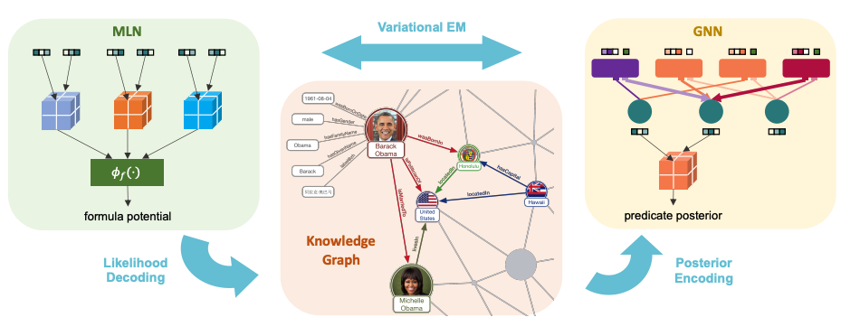 -->
<p><strong>Efficient Probabilistic Logic Reasoning with Graph Neural Networks</strong><br>
Yuyu Zhang, <u>Xinshi Chen</u>, Yuan Yang, Arun Ramamurthy, Bo Li, Yuan Qi, Le Song<br>
<em>International Conference on Learning Representations</em> (<strong>ICLR</strong>) 2020<br>
<a href="https://openreview.net/pdf?id=rJg76kStwH">paper</a> | <a href="https://github.com/expressGNN/ExpressGNN">github</a> | <a href="https://iclr.cc/virtual_2020/poster_rJg76kStwH.html">talk</a></p>
<!-- <video style = "float:left;position: relative; width: 220px;height: 100px; margin-right: 20px;margin-top: 10px" autoplay loop>
  <source src="./video/mpf2.mp4" type="video/mp4">
</video> -->
<p><strong>Particle Flow Bayes' Rule</strong><br>
<u>Xinshi Chen</u>*, Hanjun Dai*, Le Song (*equal contribution)<br>
<em>International Conference on Machine Learning</em> (<strong>ICML</strong>) 2019<br>
<a href="http://proceedings.mlr.press/v97/chen19c/chen19c.pdf">paper</a> | <a href="https://github.com/xinshi-chen/ParticleFlowBayesRule">github</a> | <a href="https://icerm.brown.edu/video_archive/?play=1819">talk</a> | <a href="./papers/slides/icml2019_pfbr.pdf">slides</a> | <a href="./papers/posters/icml2019_pfbr.pdf">poster</a></p>
<!-- 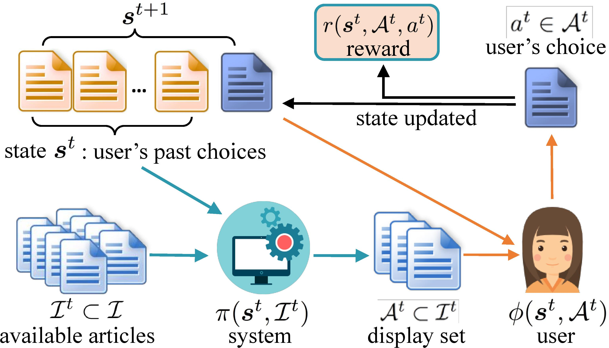 -->
<p><strong>Generative Adversarial User Model for Reinforcement Learning Based Recommendation System</strong><br>
<u>Xinshi Chen</u>, Shuang Li, Hui Li, Shaohua Jiang, Yuan Qi, Le Song<br>
<em>International Conference on Machine Learning</em> (<strong>ICML</strong>) 2019<br>
<a href="http://proceedings.mlr.press/v97/chen19f/chen19f.pdf">paper</a> | <a href="https://github.com/xinshi-chen/GenerativeAdversarialUserModel">github</a> | <a href="https://slideslive.com/38916813/time-series">talk</a> | <a href="./papers/slides/icml2019_user_model.pdf">slides</a> | <a href="./papers/posters/icml2019_user_model.pdf">poster</a></p>
<!-- 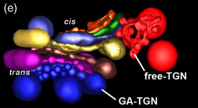 -->
<p><strong>A distinct class of vesicles derived from the trans-Golgi mediates secretion of xylogalacturonan in the root border cell</strong><br>
Pengfei Wang, <u>Xinshi Chen</u>, Cameron Goldbeck, Eric Chung, Byung-Ho Kang<br>
<em>The Plant Journal</em> 2017<br>
<a href="https://onlinelibrary.wiley.com/doi/epdf/10.1111/tpj.13704">paper</a></p>
<!-- 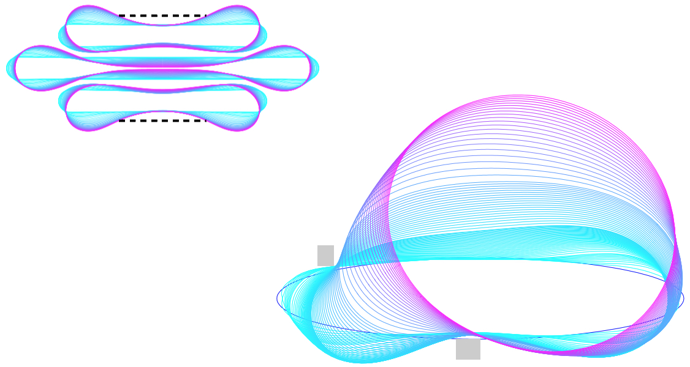 -->
<p><strong>Parametric Finite Element Method for Shape Optimization applied to Golgi Stack</strong><br>
CUHK Theses &amp; Dissertations Collection 2017 [<a href="https://arxiv.org/pdf/1902.00619.pdf">arxiv</a>]<br>
Committee: Prof. <a href="https://www.math.cuhk.edu.hk/~rchan/">Raymond Honfu Chan</a>, Prof. <a href="https://www.math.cuhk.edu.hk/~lmlui/">Ronald Lok Ming Lui</a>, Prof. <a href="https://www.math.cuhk.edu.hk/~tschung/">Eric Chung</a><br>
 </p>
<h2 id="education">Education</h2>
<p style="text-align:left;">
<em>Ph.D. in Machine Learning</em>
<span style="float:right;"><em>2017 - 2022</em></span><br />
&bull; Georgia Institute of Technology (Advisor: <a href="https://www.cc.gatech.edu/~lsong/">Prof. Le Song</a>)<br />
&bull; Dissertation: Duality Between Deep Learning And Algorithm Design
</p>
<p style="text-align:left;">
<em>M.Phil. (Master of Philosophy) in Mathematics</em>
<span style="float:right;"><em>September 2015 - July 2017</em></span><br />
&bull; The Chinese University of Hong Kong (Advisor: <a href="https://arxiv.org/pdf/1902.00619.pdf">Prof. Eric Chung</a>)<br />
&bull; Thesis: Parametric Finite Element Method for Shape Optimization [<a href="https://arxiv.org/pdf/1902.00619.pdf">PDF</a>]<br />
</p>
<p style="text-align:left;">
<em>B.Sc. in Mathematics</em>
<span style="float:right;"><em>September 2011 - July 2015</em></span><br />
&bull; The Chinese University of Hong Kong<br />
&bull; Exchange in math department at <em>ETH Zurich, Switzerland</em> <span style="float:right;"><em>January 2014 - June 2014</em></span>
</p>
<h2 id="experience">Experience</h2>
<p style="text-align:left;">
<em>Research Scientist</em>
<span style="float:right;"><em>Present</em></span><br />
&bull; ByteDance Seed, AI for Science<br />
&bull; Working on the Protenix family of open-source models and tools for biomolecular structure prediction and protein design.
</p>
<p style="text-align:left;">
<em>Research Assistant</em>
<span style="float:right;"><em>Feb 2021 - July 2021</em></span><br />
&bull; Mohamed bin Zayed University of Artificial Intelligence (MBZUAI), United Arab Emirates
</p>
<p style="text-align:left;">
<em>Research Intern</em>
<span style="float:right;"><em>June 2020 - August 2020</em></span><br />
&bull; Facebook AI, Menlo Park.
</p>
<p style="text-align:left;">
<em>Research Assistant or Teaching Assistant</em>
<span style="float:right;"><em>September 2017 - 2022</em></span><br />
&bull; Teach in School of Mathematics, Georgia Institute of Technology.<br />
&bull; Work in Machine Learning Group, supervised by Prof. Le Song.
</p>
<p style="text-align:left;">
<em>Research Intern</em>
<span style="float:right;"><em>June 2018 - August 2018</em></span><br />
&bull; AI department, Ant Financial (affiliate company of Alibaba), Hangzhou, China
</p>
<p style="text-align:left;">
<em>Teaching Assistant</em>
<span style="float:right;"><em>August 2015 - June 2017</em></span><br />
&bull; Department of Mathematics, The Chinese University of Hong Kong
</p>
<p style="text-align:left;">
<em>REU Research Intern</em>
<span style="float:right;"><em>June 2014 - August 2014</em></span><br />
&bull; Oak Ridge National Laboratory, United States<br />
&bull; Mentor: Dr. Joshua Fu, Dr. John Drake and Dr. Kwai Wong<br />
&bull; Solve diffusion-convection equation based on finite element method.<br />
&bull; Title: Modeling Chemical Transport with Galerkin Methods[<a href="https://www.jics.utk.edu/csure-reu/csure14/projects">Project link</a>]
</p>
<h2 id="academic-service">Academic Service</h2>
<p>• Program Committee / Reviewer: AAAI 2020-22, ICLR 2020-22, AISTAT 2020-22, MSML 2020-21, ICML 2020-21, NIPS 2020-21, IJCAL 2021</p>
<h2 id="teaching">Teaching</h2>
<p><em>School of Computational Science and Engineering, GaTech</em><br />
• CSE6740 Computational Data Analysis, (Two Guest Lectures), Fall 2019</p>
<p><em>School of Mathematics, GaTech</em><br />
• MATH2551 Multivariable Calculus, (Recitation Teaching), Spring 2018 &amp; Fall 2017</p>
<p><em>Department of Mathematics, CUHK</em><br />
• MATH3240 Numerical Methods for Differential Equations, (Tutorial), Spring 2016<br />
• MATH3230 Numerical Analysis, (Tutorial), Fall 2016 &amp; Fall 2015<br />
• MATH2010 Advanced Calculus I, (Tutorial), Spring 2016<br />
• MATH1510 Calculus for Engineers, (Tutorial), Fall 2015</p>
<p><em>Enrichment Programme for Young Mathematics Talents, Hong Kong</em><br />
• SAYT1054 Mathematical Analysis, (Discussion Group), Fall 2013</p>
<h2 id="award">Award</h2>
<p>• Google PhD Fellowship, 2020-2022<br />
• ICLR Travel Award, 2020<br />
• ICML Travel Award, 2019<br />
• Postgraduate Studentship, CUHK, 2015-2017<br />
• Best oral presentation in 3rd AoE(Area of Excellence) Symposium, 2016<br />
• Professor Charles K. Kao Research Scholarship, 2013-14<br />
• College Head&rsquo;s list - for outstanding academic performance, 2013-14<br />
• Undergraduate Exchange Scholarship, 2013</p>
<h2 id="extra-curriculum">Extra-Curriculum</h2>
<p><em>Volunteer Experience</em><br>
• Bronze Award for Volunteer Service (Individual), 2012, <em>issued by HK Social Welfare Department</em><br>
• Gold Award for Volunteer Service (Group), 2012, <em>issued by HK Social Welfare Department</em><br>
• Overall Best Mainland Service Project 2011-12, <em>Caring Heart Community Service Project Scheme</em></p>
<p><em>Certificates</em><br>
•  Completion of the Mental Health First Aid Course, <em>certified by MHFA International</em><br>
•  Advanced Open Water Diver, <em>certified by PADI</em></p>

      </article>
     
  </div>
</main>

		</main>
		
				<div class="hide-print sans-serif f6 f5-l mt5 ph3 pb6 center nested-copy-line-height lh-copy nested-links mw-100 measure-wide">
		<div class="about-the-author">
		
			
				
			
		
		</div>
		
	</div>

		
		
<footer class="w-100 sans-serif" role="contentinfo">
        <nav class="w-third-l pb3 f6 center db" role="navigation"></nav>
</footer>

		
		<footer class="hide-print sans-serif f6 fw1 bg-black near-white bottom-0 w-100 pa3" role="contentinfo">
			<p class="w-50 near-white">
				&copy; 2026 Xinshi Chen
			</p>
		</footer>
		
	
	
	</body>
</html>
